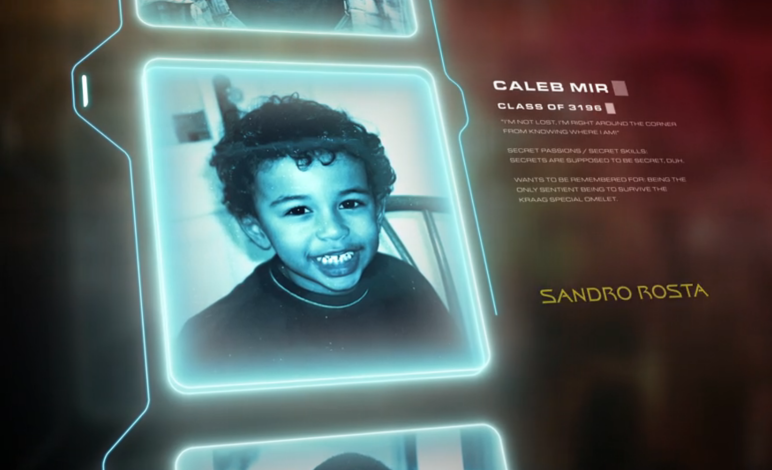
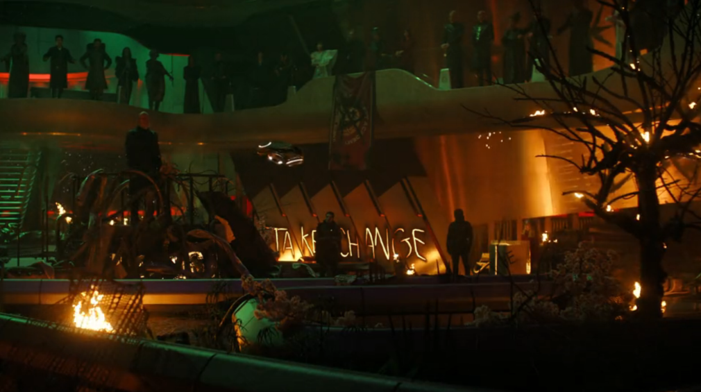

@c6reviews.
@c6reviews.With Season 1 of Starfleet Academy officially in the books, of course I have some thoughts I wanted to share. With a more complete picture of what the show wants to be, my opinion has certainly changed a bit since my initial optimism after episodes 1 and 2, and then my note of concern after episode 3.

I have a couple of things to get out of the way before getting into any specifics. First, I think that all of modern Star Trek – this show included – suffers from this 10-episode format, especially in their first seasons. We have brand-new characters that need to be introduced and backstories that need to be presented, and we have such a limited time to do it. As such, character introduction-episodes take up too great of a portion of the season, leaving us with less time for the “meat and potatoes” episodes. We've hardly gotten to know most of our characters, and we're already out of new stories until next year.
The second thing I need to state clearly: I am not a young adult anymore, and this series is obviously targeting a young adult audience. Despite the fact that I was a young adult in the past and that I am capable of remembering life in those days, some of the topics and antics explored on this show just don't resonate with me anymore, and some are downright groan-worthy. However, I always try to temper my opinions with the knowledge that not every television show is written specifically “for me” and that other people exist. As a life-long fan of Star Trek, I will always try to see the good in each new show, but I will also not candy-coat the situation when I think something was done poorly. That being said, this show can hardly be considered to be exclusively a young adult drama – there is plenty of story here that doesn't focus on the daily minutiae of 20-somethings life.
So many of the articles I read or videos I watch about this show either take the stance of hating every possible thing about it, or they artificially praise the show as a stroke of genius just to counter the former. I don't know why a measured approach is so rare to find. (Actually, I do know: articles that don't commit to an extreme that either supports your opinion or directly challenges it aren't as satisfying to read.) Is Star Trek: Starfleet Academy a terrible show with no redeeming qualities? Certainly not! Is it a masterpiece to be lauded as the finest example of modern storytelling? Also certainly not. It's okay to have mixed feelings about the show.
Okay, I've stood on my soap box for far too long. Let's get into it:
👎 Furniture without legs was an unsustainable style choice — I want to open with this niche complaint about the setting. This story takes place in the 32nd century, after the events of seasons 3-5 of Star Trek: Discovery, which was the first show to introduce what life was like in this far-future. One of the defining style characteristics for this century as depicted in Discovery – for whatever reason – was furniture that just “floated”. Chairs and tables did not have legs reaching down to the ground. This was done, obviously, with CGI manipulation. And that CGI manipulation was, obviously, not going to be practical to maintain in every future scene that takes place in the 3100s. And so, here we are, back to more traditional leg-based furniture.
👍 Holly Hunter as Nahla Ake — I admit, I was skeptical at first, but I really warmed up to Hunter's portrayal of the Academy Chancellor. Ake brings a warmth and wisdom to the students while also being a strong commanding officer.
🤷♂️ War College rivalry — I mean, obviously part of being in a higher-education institution is having some rivalry with some other higher-education institution so... this was definitely necessary, right? I'm not really sure. The War College only appears in a few episodes, just to have that rivalry, and they never really became an important part of the overall season.
👍 Jay-Den's backstory — ah, now here's something Star Trek is known for: using alien cultures to hold up a mirror to our own. Here, Jay-Den feeling like a black sheep in his own family because he doesn't conform to traditional Klingon values is an allegory for today's youth who may face strife in their own families when questioning their own identities and values. Of course, the metaphor here may be a little on the nose for some people, inviting some vitriolic reactions from other commentators, but I invite you to remember that Klingons are a fictional race in a fictional universe.
👎 Reymi's backstory — Darem Reymi is just all over the place. Producers invented a brand-new, never-before-seen species for the show, and we ended up with... someone who looks perfectly human, but can turn into a fish-like creature with gills which can conveniently withstand the vacuum of space, has trouble digesting many foods, vomits glitter, starts off as a bully, but is really just misunderstood because he's actually... *rolls dice* a prince, why not? I want to like this character, I just need him to find his center. I'm hoping that next season will help to better shape Reymi's character, because as it stands, I felt like his backstory episode was more of a detracting side-quest than a vital part of the story.
🤷♂️ Ake killed her own son, or something? — This clearly-traumatic bit of Ake's past is an important part of what makes her who she is today, but it's only sort of mentioned in passing in episode 6 just so that it can become a talking point in the season finale. I think this bit of history needed a flashback scene, so that the audience could better absorb the event as part of Ake's past, instead of just being told about it.
👍 Love Letter to DS9 — unsurprisingly, I was a big fan of episode 5, with special guest star Cirroc Lofton reprising his role as Jake Sisko. I did find it strange, however, that there was a post-title thanking actor Avery Brooks (Ben Sisko), directly. That sort of direct reference to Trek actors is usually only reserved for when they pass away. Of course, I really wish they'd do more to bring closure to the Deep Space Nine story. A two-season streaming story, a 4-episode mini-series... heck, I'd take a 90-minute straight-to-streaming film at this point! I have a totally unsubstantiated theory that Avery Brooks might have been approached about it, but is not amenable to the idea. Maybe “Thanks, Avery” is part of a campaign to coax him back? I'm making this all up: it's just wishful thinking on my part.
👎 Episode 8: The Life of the Stars — I need to tread carefully here, because this episode is definitely the least action-packed and the most introspective of the season, with lots of dialog discussing personal feelings and interpersonal connections, and – considering how audiences negatively reacted to similar episodes in Picard Season 2 – I predict that this episode will be the biggest target among the “haters”. Just as I defended introspection and personal journeys in Season 2 of Picard, I would normally defend them here, too... but, I still think this episode is the weakest of the season. The Doctor/SAM storyline directly references VOY 3x22: Real Life, where the Doctor created a holographic family for himself and suffered through the tragic loss of his daughter. In my review of that Voyager episode, I used the phrase “manufactured drama” to describe the story, and I see a lot of that in this Starfleet Academy episode, too. I just don't think we've spent enough time with these characters to truly, deeply feel the emotions this episode is trying to evoke. And the rest is just... Tilly psychology-bullying the cadets until they exorcise their supposed traumas. With so much soft piano and slow, drawn-out scenes, this episode was just a real slog. Oh, except for the part where we just fast-forward through SAM's rebirth and childhood because of a convenient sci-fi time differential.
🤷♂️ What happened to Lura? — The character of Lura Thok was an early favorite for me, but then she just goes missing for half the season and barely even makes an appearance in the finale!
👎 Caleb forgets his password — Do you mean to tell me that the main plot hasn't progressed until the 9th episode because Caleb didn't think to decrypt transmissions with a 7-character codeword? Argh.
🤷♂️ Caleb's Quest — Predictably, the season is a story-sandwich, with the compelling tale about Caleb and his mother in episodes 1, 2, 9, and 10... with barely a mention of it in the middle six episodes. The season finale does effectively wrap it all up in a neat package, but parts of the middle still felt a little hollow.
👍 The season finale — It was worth the ride, in the end. I enjoyed the conclusion, and the atmosphere of the ad-hoc trial in the graffitied atrium. It reminded me of Sander Cohen's stage in Fort Frolic from BioShock – I know, that's not an especially timely reference, and I'm crossing universes. Anyway, after all of the strife and drama, there was something very relieving about once again hearing that running gag about the Talaxian furfly from the Digital Dean of Students (voiced by Stephen Colbert), signaling that things were getting back to normal.

❔ The question I find myself asking is this: other than the time and setting, is there something in this series that takes advantage of the uniqueness of “Star Trek”, or does it simply borrow elements from that universe and make an otherwise-generic young adult drama? One way to begin to answer that question is to strip away the sci-fi elements and see what remains – see how much of the story stands on its own and how much falls apart. Does the story still work if everyone is human, on Earth, in... say... 2026? If so, does it really need to be “in space”? See, today, there is nothing analogous to space exploration here on Earth, and Star Trek has often used the vast unknown as a stage to explore ideas by using alien species as vehicles to examine the human condition. Is SFA doing that? I am not fully prepared to answer that question at this time.
As many fans will tell you, one of the core tenets of Star Trek is optimism, even in the face of adversity. SFA accomplishes this by taking a character who has faced adversity almost his entire life and who has settled into a constant state of pessimism, throwing that character into the warm embrace of the Academy and showing him that joy is still accessible in the universe, and finally having that character reflect on his experiences over the last year to extol the ideals on which Starfleet and the Federation are built. It is effective, if a bit obtuse. Caleb's appeal in the finale reminds me a bit of Burnham's similar address in the Season 1 finale of Star Trek: Discovery where she states concretely that the Federation is “good” and “moral”, just in case the audience wasn't sure. I find this eulogizing to be far less convincing than witnessing the Federation's integrity through its actions. Still, Caleb's remarks do at least logically flow from his year of experience at the academy.
One more sort of meta-note about this show. I don't know if anyone else has experienced this, but I have repeatedly noticed how difficult it is to find this show in the Paramount+ interface. Even on days when a new episode is released, finding the show on the main page is often next to impossible. It's buried behind banners for other shows, and it doesn't even show up on my “continue watching” list. Paramount+ should know that I, personally, watch a ton of Star Trek. It often suggests Trek shows and movies to me that I haven't watched recently, but to watch a new episode of SFA, I sometimes have to literally go to the search bar to get to it. I'm not sure if this is intentional or accidental, but it's doing the show a disservice.
Overall, Star Trek: Starfleet Academy has some great ideas and a promising core story, but it's just not quite “there” yet. I am looking forward to another season and I'm optimistic that the show can pick itself up with more time to expand its story. ◼